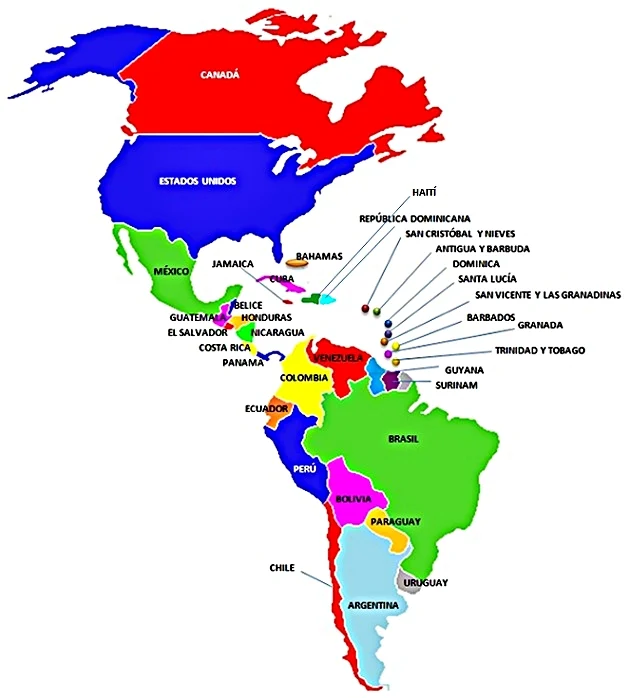
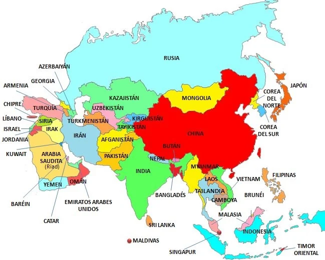
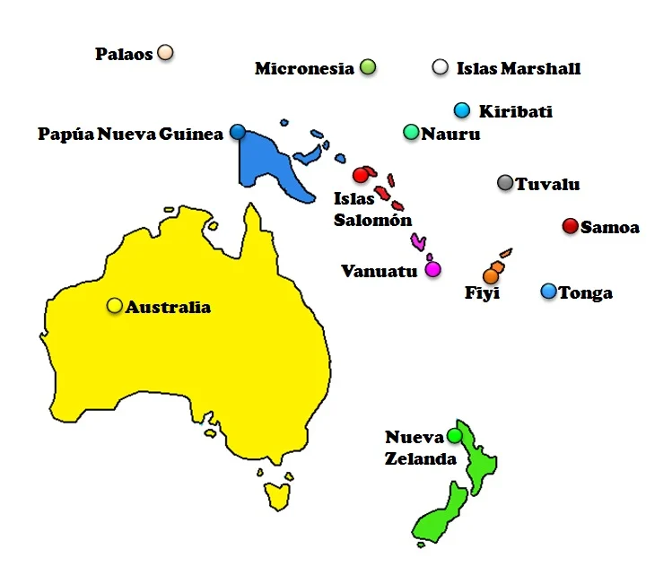

El mundo alberga actualmente 194 países (año 2022) distribuidos por los cinco continentes: 54 en África, 50 en Europa*, 48 en Asia*, 35 en América y 14 en Oceanía. (*) El continente europeo y el asiático comparten siete países denominados países euroasiáticos.
Con objetivo de consulta o aprendizaje, a continuación os dejo un listado con todos los países del mundo en orden alfabético y un mapa de cada continente para ubicar cada país en la geografía mundial
.- Afganistán
- Albania
- Alemania
- Andorra
- Angola
- Antigua y Barbuda
- Arabia Saudita
- Argelia
- Argentina
- Armenia
- Australia
- Austria
- Azerbaiyán
- Bahamas
- Bangladés
- Barbados
- Baréin
- Bélgica
- Belice
- Benín
- Bielorrusia
- Birmania
- Bolivia
- Bosnia y Herzegovina
- Botsuana
- Brasil
- Brunéi
- Bulgaria
- Burkina Faso
- Burundi
- Bután
- Cabo Verde
- Camboya
- Camerún
- Canadá
- Catar
- Chad
- Chile
- China
- Chipre
- Ciudad del Vaticano
- Colombia
- Comoras
- Corea del Norte
- Corea del Sur
- Costa de Marfil
- Costa Rica
- Croacia
- Cuba
- Dinamarca
- Dominica
- Ecuador
- Egipto
- El Salvador
- Emiratos Árabes Unidos
- Eritrea
- Eslovaquia
- Eslovenia
- España
- Estados Unidos
- Estonia
- Etiopía
- Filipinas
- Finlandia
- Fiyi
- Francia
- Gabón
- Gambia
- Georgia
- Ghana
- Granada
- Grecia
- Guatemala
- Guyana
- Guinea
- Guinea ecuatorial
- Guinea-Bisáu
- Haití
- Honduras
- Hungría
- India
- Indonesia
- Irak
- Irán
- Irlanda
- Islandia
- Islas Marshall
- Islas Salomón
- Israel
- Italia
- Jamaica
- Japón
- Jordania
- Kazajistán
- Kenia
- Kirguistán
- Kiribati
- Kuwait
- Laos
- Lesoto
- Letonia
- Líbano
- Liberia
- Libia
- Liechtenstein
- Lituania
- Luxemburgo
- Macedonia del Norte
- Madagascar
- Malasia
- Malaui
- Maldivas
- Malí
- Malta
- Marruecos
- Mauricio
- Mauritania
- México
- Micronesia
- Moldavia
- Mónaco
- Mongolia
- Montenegro
- Mozambique
- Namibia
- Nauru
- Nepal
- Nicaragua
- Níger
- Nigeria
- Noruega
- Nueva Zelanda
- Omán
- Países Bajos
- Pakistán
- Palaos
- Panamá
- Papúa Nueva Guinea
- Paraguay
- Perú
- Polonia
- Portugal
- Reino Unido
- República Centroafricana
- República Checa
- República del Congo
- República Democrática del Congo
- República Dominicana
- Ruanda
- Rumanía
- Rusia
- Samoa
- San Cristóbal y Nieves
- San Marino
- San Vicente y las Granadinas
- Santa Lucía
- Santo Tomé y Príncipe
- Senegal
- Serbia
- Seychelles
- Sierra Leona
- Singapur
- Siria
- Somalia
- Sri Lanka
- Suazilandia
- Sudáfrica
- Sudán
- Sudán del Sur
- Suecia
- Suiza
- Surinam
- Tailandia
- Tanzania
- Tayikistán
- Timor Oriental
- Togo
- Tonga
- Trinidad y Tobago
- Túnez
- Turkmenistán
- Turquía
- Tuvalu
- Ucrania
- Uganda
- Uruguay
- Uzbekistán
- Vanuatu
- Venezuela
- Vietnam
- Yemen
- Yibuti
- Zambia
- Zimbabue
- EUROPA
.webp)
- AMERICA
- ASIA
- OCEANIA
- Si queréis saber por qué algunos territorios no están incluidos en el listado, podéis visitar el punto 3 (aclaraciones) de la entrada [¿Cuántos países hay?].
- Podéis consultar la capital de cada país en [Países y capitales del mundo]
- La República de Macedonia cambió su nombre oficialmente a Macedonia del Norte el 14 de febrero de 2019.
- a información está actualizada al año 2022.